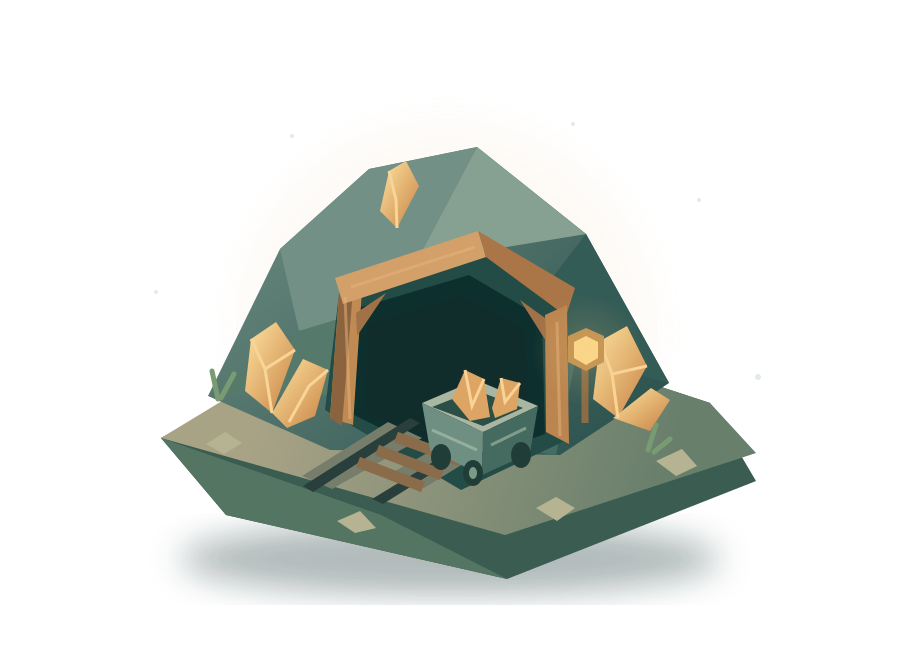

ШАХТА ЖДЁТ
Ещё немного
вглубь.
Найди свою жилу. Обустрой шахту.
Реши, когда пора двигаться дальше.
01 Добывай руду и получай монеты
02 Улучшай оборудование или меняй шахту
03 Завершай экспедицию в любой момент
МЕДНАЯ ЛОЩИНА № 01

Никакой спешки.
Твой темп. Твой маршрут.
Твой темп. Твой маршрут.
ТВОЯ ЭКСПЕДИЦИЯ
Медная лощина
0монет
00:00в игре
УЧАСТОК 01Богатая жила
Ручная добыча
СЕЙЧАС ЗА УДАР
6 монет
Здесь ещё много руды.
У каждой жилы свой запас. Доход меняется только от добычи и улучшений. Скрытых наград нет.
ЭКСПЕДИЦИЯ ЗАВЕРШЕНА
Спасибо за игру.
Сегодня здесь стало немного светлее.
0монет в рюкзаке
Можно закрыть страницу. Спасибо за участие в исследовании.